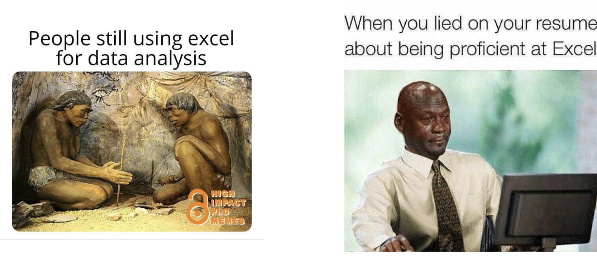

1 Why Data analysis?
1.1 What is the object of this book?
Data are empirical material organised into a form that can be analysed.
Data analysis is a process of gathering, inspecting, cleansing, transforming, and modelling data with the goal of discovering useful information, informing conclusions and supporting decision-making.
(Source: https://en.wikipedia.org/wiki/Data_analysis)
1.2 What is the objective of this course?
To help you become a better consumer of information and academic research:
- learn how to read and interpret a table or a chart;
To start you on the road to becoming a producer of information and research:
to pose a question and look for relevant data;
to collect, download, manage, explore, and analyse data;
to communicate findings using graphs and tables
1.3 Why learning Excel?
Microsoft Excel is the most popular computer spreadsheet programme that can be used to store and analyse large quantities of data.
Excel has many functions to sort and analyse the data that range from basic mathematical functions to complex statistical analyses.
It is one of the most widely used programmes of its kind across the globe and has become the industry standard.

- You can even use it to paint!
See https://mymodernmet.com/tatsuo-horiuchi-excel-spreadsheet-paintings/.
1.4 What is Excel?
A spreadsheet is an interactive computer application for the organisation, analysis, and storage of data in tabular form.
(Source: https://en.wikipedia.org/wiki/Spreadsheet )A spreadsheet consists of a table of cells arranged into rows and columns and referred to by the X (Columns) and Y (Rows) locations.
Columns locations are normally represented by letters, “A”, “B”, “C”, etc., while rows are normally represented by numbers, 1, 2, 3, etc.
A single cell can be referred to by addressing its row and column, “C10” for instance (like playing battleship).
What makes a spreadsheet software program unique is its ability to calculate values using mathematical formulas and the data in cells.
1.4.1 Spreadsheets basic components
Cell
A box for holding data. A single cell is usually referenced by its column and row.Worksheet/Sheet
A grid of cells with either raw data, called values, or formulas in the cells.Values
Raw data (general numbers, text, dates). Alternatively, a value can be based on a formula, which might perform a calculation.Formulas say how to mechanically compute new values from existing values.
Functions
Built-in functions, such as arithmetic operations (for example, summations, averages), trigonometric functions, statistical functions, etc..Charts
Graphical display of data.
1.4.2 History of spreadsheets
VisiCalc by Dan Bricklin released in1979
It was the first spreadsheet computer program for personal computers, originally released for the Apple II.
It is considered the application that turned the microcomputer from a hobby for computer enthusiasts into a serious business tool. VisiCalc is considered the Apple II’s killer app.
It sold over 700,000 copies in six years, and as many as 1 million copies over its history.
Lotus 1-2-3 by Lotus Software (1983)
- Added the possibility of creating graphs
Microsoft Excel released in 1985 for Macintosh Apple II and in 1987 on Windows
- By the early 1990s, Excel had started to outsell Lotus 1-2-3 and helped Microsoft achieve its position as a leading PC software developer.
1.4.3 How to get it?
Office 365 Education
Using your Unimi email (name.surname@studenti.unimi.it) at this link: https://www.microsoft.com/it-it/education/products/office
MS Excel for Linux users
Use Wine https://www.winehq.org/ : allows you to run Windows apps on Linux.
Use Microsoft Excel via browser:
Go to https://www.office.com
Sign in with your Unimi user account